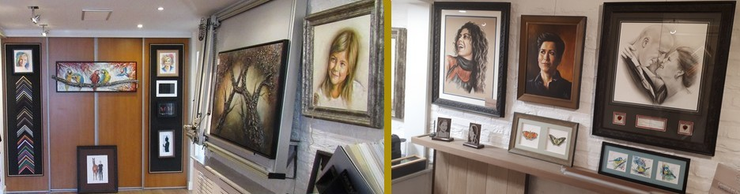

Onze Showroom
Zoals onze naam 'Aan 't Huis' aangeeft: onze lijstenmakerij hebben we gewoon aan huis, informeel en persoonlijk. Of u nu een kunstwerk, foto's, een borduurwerk of een kindertekening wilt laten inlijsten — u bent van harte welkom!


Ik ben Joachim van Dijk en woon samen met mijn vrouw en twee dochters in Berghem (gemeente Oss). Al vele jaren hebben mijn vrouw Carroline (portretschilder, bekend van 'Sterren op het Doek') en ik het geluk om van onze hobby ons werk te kunnen maken.
Carroline werkt als zelfstandig kunstenaar en ik verzorg het werk daaromheen: het prepareren van de ondergronden, het vernissen van het voltooide werk en het professioneel inlijsten daarvan. Alle werken die in onze lijstenmakerij hangen, zijn van onze hand.
Na meer dan 15 jaar de lijsten te hebben verzorgd, werd de keuken te klein en de passie te groot. We besloten onze aangrenzende garage om te bouwen tot showroom, zodat we nu onze lijsten aan iedereen in Berghem en omstreken kunnen aanbieden.

Zoals onze naam 'Aan 't Huis' aangeeft: onze lijstenmakerij hebben we gewoon aan huis, informeel en persoonlijk. Of u nu een kunstwerk, foto's, een borduurwerk of een kindertekening wilt laten inlijsten — u bent van harte welkom!
Onze kwaliteitsprofielen worden met de hand en met behulp van specialistische precisiemachines exact op maat en naar uw wens gemaakt. Waarbij alleen gebruik wordt gemaakt van de beste zuurvrije materialen en uw werk professioneel en duurzaam wordt ingelijst, zoals het hoort.
Er is veel mogelijk: modern inlijstwerk uit de laatste collecties, maar ook traditioneel. Fijne lijstjes tot heel breed en robuust, meerdere uitsnedes in een passepartout, speciaal Artglas (ontspiegeld) of dubbele passe-partouts, waarbij u kunt kiezen uit vele kleuren en designs.
En doordat we alles zelf in eigen huis doen, zijn onze lijntjes kort, onze service hoog en onze prijzen scherp.
'Elk werk dat waarde voor u heeft, is het waard om goed ingelijst te worden.'
2019: Carroline geselecteerd voor de tentoonstelling 'Lang Leve Rembrandt' in het Rijksmuseum!
Museum Jan Cunen · Jumbo · Loodswezen e.a.
Perfect bereikbaar vanuit Oss, Heesch, Schaijk, Geffen, Macharen, Lith, Herpen, Ravenstein, Nistelrode, Uden en Megen.